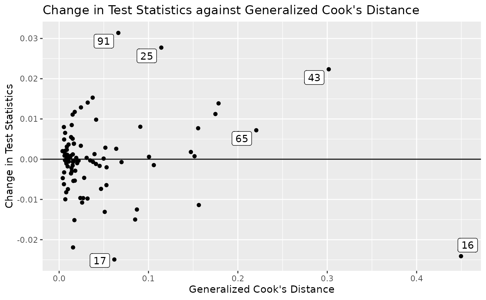
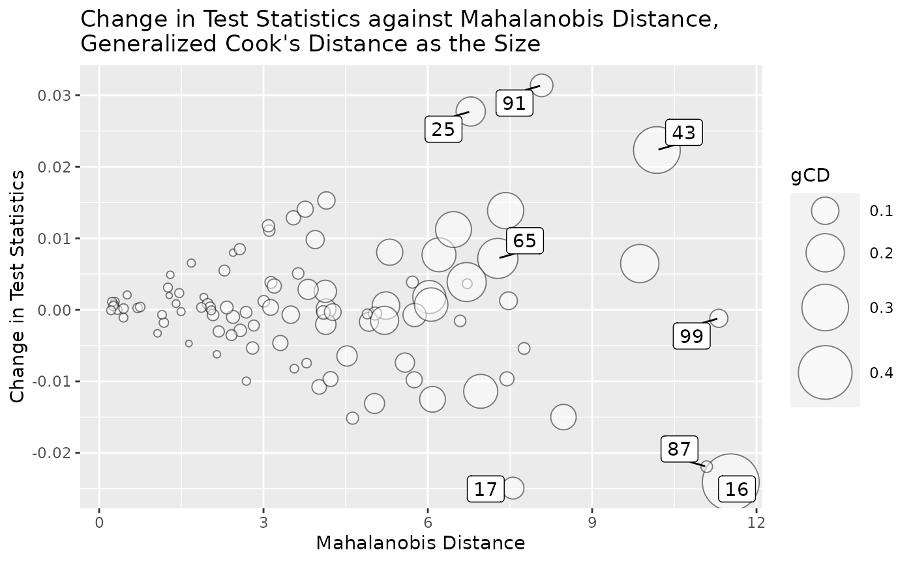

The semfindr package contains functions for doing structural equation modeling (SEM) diagnostics, such as identifying influential cases and computing various diagnostic measures. This is an implementation of sensitivity analysis proposed by Pek and MacCallum (2011), with some plots based on similar plots available in the car package by Fox and Weisberg (2019).
Many of the measures for a case is computed by refitting a model with this case removed. Instead of doing this once for each measure, semfindr adopts this workflow:
Decide cases to examine. All cases will be examined, by default.
For each selected case, remove it and refit the model.
Store the results.
Functions for deletion statistics will compute them from this list. Users can do as many diagnostic analysis as they want without repeating the time consuming refitting step.
The following sections illustrates how to use some of the major functions.
The sample dataset is semfindr::pa_dat2, with variables iv1, iv2, m1, and dv, and 100 cases. For convenience, we assign pa_dat to a new symbol, dat.
library(semfindr)
dat <- pa_dat
head(dat)
#> m1 dv iv1 iv2
#> 1 0.32067106 1.4587148 0.2055776 -0.42187811
#> 2 0.15360231 -0.3809220 0.1853543 0.15229953
#> 3 0.35136439 -0.4886773 0.9151424 1.16670950
#> 4 -0.56529330 -0.9766142 0.2884440 0.04563409
#> 5 -1.60657017 -1.0948066 -0.5756171 -0.18184854
#> 6 0.03143301 0.5859886 0.1420111 0.06286986Assume that the target model under examination is a path model with two predictors, one mediator, and one outcome variable:
mod <-
"
m1 ~ iv1 + iv2
dv ~ m1
"We fit the model by lavaan::sem():
We refit the model 100 times, each time with one case removed:
fit_rerun <- lavaan_rerun(fit)This example takes about 4 to 8 seconds. For larger samples or more complicated models, semfindr::lavaan_rerun() supports parallel processing by setting parallel to TRUE.
semfindr::lavaan_rerun() also supports selecting cases based on Mahalanobis distance on all variables in the model or on implied scores of outcome variables. See the help page of semfindr::lavaan_rerun() or vignette("selecting_cases") for the details.
If this process is slow, we can save the results by base::saveRDS() such that we can load it for analysis later.
One intuitive measure is to compute the changes in parameter estimates if a case is deleted, with the changes standardized by their standard errors (Pek & MacCallum, 2011, Equation 7):
fit_est_change <- est_change(fit_rerun)
round(head(fit_est_change), 3)
#> m1~iv1 m1~iv2 dv~m1 m1~~m1 dv~~dv gcd
#> 1 0.024 -0.030 0.052 -0.037 0.017 0.006
#> 2 0.007 0.003 -0.013 -0.067 -0.058 0.008
#> 3 -0.038 -0.040 -0.030 -0.063 -0.045 0.010
#> 4 -0.024 -0.003 0.022 -0.051 -0.044 0.006
#> 5 0.067 0.028 0.033 0.050 -0.066 0.013
#> 6 0.004 0.001 0.010 -0.069 -0.054 0.008If the standardized change of a parameter for a case is positive, then the estimate in the full sample is larger than that with this case removed.
For example, the standardized change of the path from iv1 to m1 is 0.024 for the first case. The estimates of this path with and without the first case are 0.215 and 0.212, respectively. The full sample estimate is larger than the estimate with the first case removed.
semfindr::est_change() also computes the generalized Cook’s distance (Cook, 1977; Pek & MacCallum, 2011, Equation 6), gcd, using the parameters examined. gcd is analogous to Cook’s distance in multiple regression. It measures the “overall” change in the parameters if a case is deleted.
Let’s examine the top five cases with largest gcd:
i <- order(fit_est_change[, "gcd"],
decreasing = TRUE)
i_top5 <- i[1:5]
round(fit_est_change[i_top5, ], 3)
#> m1~iv1 m1~iv2 dv~m1 m1~~m1 dv~~dv gcd
#> 16 0.052 -0.038 -0.237 -0.004 0.624 0.450
#> 43 -0.403 -0.263 -0.135 0.223 0.120 0.302
#> 65 0.152 0.191 0.363 0.076 0.161 0.221
#> 85 -0.174 0.216 -0.119 0.335 -0.052 0.208
#> 51 0.421 -0.057 0.094 0.089 -0.044 0.200Pek and MacCallum recommended computing generalized Cook’s distance for subset of parameters that researchers would like to assess case influence. This can be done by specifying the parameters to be included. For example, we may compute the changes and the gcd only for path coefficients, using the argument parameters:
fit_est_change_paths_only <- est_change(fit_rerun,
parameters = c("m1 ~ iv1",
"m1 ~ iv2",
"dv ~ m1"))
i <- order(fit_est_change_paths_only[, "gcd"],
decreasing = TRUE)
round(fit_est_change_paths_only[i[1:5], ], 3)
#> m1~iv1 m1~iv2 dv~m1 gcd
#> 43 -0.403 -0.263 -0.135 0.238
#> 51 0.421 -0.057 0.094 0.190
#> 65 0.152 0.191 0.363 0.189
#> 34 -0.314 -0.192 -0.109 0.142
#> 32 -0.247 0.195 -0.191 0.138See the help page of semfindr::est_change() for further information.
The standardized changes in parameter may not be easy to interpret. If the original units are interpretable, we can compute the raw changes, that is, the changes in parameter estimates if a case is deleted, not standardized by their standard errors. This can be done by semfindr::est_change_raw():
fit_est_change_raw <- est_change_raw(fit_rerun)
round(fit_est_change_raw[i_top5, ], 3)
#> m1~iv1 m1~iv2 dv~m1 m1~~m1 dv~~dv
#> 16 0.005 -0.004 -0.024 -0.001 0.108
#> 43 -0.043 -0.026 -0.014 0.028 0.022
#> 65 0.016 0.019 0.039 0.010 0.030
#> 85 -0.018 0.021 -0.013 0.041 -0.010
#> 51 0.046 -0.006 0.010 0.011 -0.008For example, the change of the path from iv1 to m1 is -0.043 for the 43rd case. The estimates of this path with and without the 43rd cases are 0.215 and 0.258, respectively. The full sample estimate is smaller than the estimate with the 43rd case removed. The raw changes is 0.215 - 0.258 or -0.043.
If desired, semfindr::est_change_raw() can also compute the changes in parameters in the standardized solution:
fit_est_change_raw_std <- est_change_raw(fit_rerun,
standardized = TRUE)
round(fit_est_change_raw_std[i_top5, ], 3)
#> m1~iv1 m1~iv2 dv~m1 m1~~m1 dv~~dv
#> 16 0.004 -0.004 -0.033 0.003 0.030
#> 43 -0.032 -0.021 -0.013 0.026 0.012
#> 65 0.011 0.011 0.029 -0.016 -0.024
#> 85 -0.020 0.008 0.001 0.001 0.000
#> 51 0.042 -0.010 0.011 -0.001 -0.009For example, these are standardized solutions of the full sample and the sample with the 43rd case removed:
standardizedSolution(fit, se = FALSE)[1, ]
#> lhs op rhs est.std
#> 1 m1 ~ iv1 0.178
standardizedSolution(sem(mod, dat[-43, ]), se = FALSE)[1, ]
#> lhs op rhs est.std
#> 1 m1 ~ iv1 0.21The change of the standardized estimate of the path from iv1 to m1 is -0.032 for the 43rd case. The standardized estimates of this path with and without the 43rd cases are 0.178 and 0.21, respectively. The full sample estimate is smaller than the estimate with the 43rd case removed. The raw changes of standardized estimate is 0.178 - 0.21 or -0.032.
semfindr::est_change_raw() also supports computing the changes for selected parameters:
fit_est_change_raw_std_paths_only <- est_change_raw(fit_rerun,
standardized = TRUE,
parameters = c("m1 ~ iv1",
"m1 ~ iv2",
"dv ~ m1"))
round(fit_est_change_raw_std_paths_only[i_top5, ], 3)
#> m1~iv1 m1~iv2 dv~m1
#> 16 0.004 -0.004 -0.033
#> 43 -0.032 -0.021 -0.013
#> 65 0.011 0.011 0.029
#> 85 -0.020 0.008 0.001
#> 51 0.042 -0.010 0.011See the help page of semfindr::est_change_raw() for further information.
One commonly used measure for identifying outliers is Mahalanobis distance (Mahalanobis, 1936; Pek & MacCallum, 2011, Equation 9). semfindr::mahalanobis_rerun() can be used to compute the Mahalanobis distance of each case on all the variables used in the target model:
fit_md <- mahalanobis_rerun(fit_rerun)
round(fit_md[i_top5, , drop = FALSE], 3)
#> md
#> 16 11.530
#> 43 10.181
#> 65 7.277
#> 85 6.709
#> 51 9.869Note that a case with a large Mahalanobis distance is not necessarily an influential case (Pek & MacCallum, 2011). Therefore, if time allows, influence measures should be examined to avoid overlooking cases that are not extreme but are influential.
Another set of intuitive measures of influence is to compute goodness of fit measures with a case deleted and measure the changes. This can be done by semfindr::fit_measures_change(), which simply gets any fit measures supported by lavaan::fitMeasures from the results from semfindr::lavaan_rerun:
fit_mc <- fit_measures_change(fit_rerun,
fit_measures = c("chisq", "cfi", "tli", "rmsea"))
round(fit_mc[i_top5, ], 3)
#> chisq cfi tli rmsea
#> 16 -1.533 0.019 0.048 -0.024
#> 43 1.306 -0.030 -0.075 0.022
#> 65 0.474 0.002 0.004 0.007
#> 85 0.280 -0.004 -0.011 0.004
#> 51 0.432 -0.005 -0.012 0.006The value is computed by \(M_\textrm{full sample} - M_\textrm{one case removed}\). Therefore, if the value is positive, the measure is higher in the full sample. If the value is negative, the measure is lower in the full sample. This convention is selected such that the interpretation is consistent with that for changes in parameter estimates.
For example, the change in CFI for the 43rd case is -0.03. Therefore, the CFI in the full sample is lower than that with the 43rd case removed, and the difference is 0.03.
The argument fit_measures is passed to lavaan::fitMeasures to specify the measures to be computed.
We can also use semfindr::influence_stat() to compute the previous measures. It calls semfindr::fit_measures_change(), semfindr::est_change(), and semfindr::mahalanobis_rerun() (if requested) and then merges their results into one matrix:
fit_influence <- influence_stat(fit_rerun)
round(fit_influence[i_top5, ], 3)
#> chisq cfi rmsea tli m1~iv1 m1~iv2 dv~m1 m1~~m1 dv~~dv gcd md
#> 16 -1.533 0.019 -0.024 0.048 0.052 -0.038 -0.237 -0.004 0.624 0.450 11.530
#> 43 1.306 -0.030 0.022 -0.075 -0.403 -0.263 -0.135 0.223 0.120 0.302 10.181
#> 65 0.474 0.002 0.007 0.004 0.152 0.191 0.363 0.076 0.161 0.221 7.277
#> 85 0.280 -0.004 0.004 -0.011 -0.174 0.216 -0.119 0.335 -0.052 0.208 6.709
#> 51 0.432 -0.005 0.006 -0.012 0.421 -0.057 0.094 0.089 -0.044 0.200 9.869One major use of semfindr::influence_stat() is to provide information for the diagnostic plots introduced below.
semfindr provides several functions to generate diagnostic plots.
To visualize the gcd, we can plot an index plot with cases on the horizontal axis and the gcd on the vertical axis using semfindr:gcd_plot:
gcd_plot(fit_influence,
largest_gcd = 3)It accepts an output of semfindr::influence_stat().
largest_gcd controls the number of cases with the largest gcd to be labelled. The default is 1.
More options of semfindr::gcd_plot() can be found on its help page.
An index plot can be computed on the Mahalanobis distance given by semfindr::influence_stat():
md_plot(fit_influence,
largest_md = 3)largest_m is used to control how many cases with high Mahalanobis distance on all the variables in the fitted model will be labelled. The default is 1.
More options for md_plot can be found from its help page.
To examine how the overall change in parameter estimates measured by gcd relates to a selected goodness of fit (gof) measure, semfindr::gcd_gof_plot() can be used:
gcd_gof_plot(fit_influence,
fit_measure = "rmsea",
largest_gcd = 3,
largest_fit_measure = 3)
largest_gcd determines the number of cases with largest gcd to be labelled, and largest_fit_measure determines the number of cases with largest absolute change in the selected goodness of fit measure to be labelled. The default is 1 for both arguments.
More options of semfindr::gcd_gof_plot() can be found from its help page.
We can also use semfindr::gcd_gof_md_plot() to plot a bubble plot of a selected goodness of fit measure against Mahalanobis distance, with the bubble size determined by generalized Cook’s distance. This plot is similar to the plot by car::influencePlot() for regression models.
gcd_gof_md_plot(fit_influence,
fit_measure = "rmsea",
largest_gcd = 3,
largest_fit_measure = 3,
largest_md = 3,
circle_size = 15)
circle_size controls the size of the largest bubble. largest_gcd, largest_fit_measure, and largest_md controls the number of cases with highest absolute values one the these measures to be labelled. Their default values are 1.
More options of semfindr::gcd_gof_md_plot() can be found from its help page.
The example above use row numbers to identify cases. If users have meaningful case IDs, they can be used to label case ( see vignette("user_id")). If users want to refit the model only with selected cases removed one-by-one, semfindr::lavaan_rerun() supports various methods to examine only selected cases (see vignette("selecting_cases")).
Last, all the plot functions return ggplot graph objects. Users can further modify them to suit their needs.
Cook, R. D. (1977). Detection of influential observation in linear regression. Technometrics, 19(1), 15–18.
Fox J., & Weisberg, S. (2019). An R companion to applied regression (3rd Edition). Sage. https://socialsciences.mcmaster.ca/jfox/Books/Companion/.
Mahalanobis, P. C. (1936). On the generalized distance in statistics. Proceedings of the National Institute of Science of India, 2, 49–55.
Pek, J., & MacCallum, R. (2011). Sensitivity analysis in structural equation models: Cases and their influence. Multivariate Behavioral Research, 46(2), 202–228. https://doi.org/10.1080/00273171.2011.561068